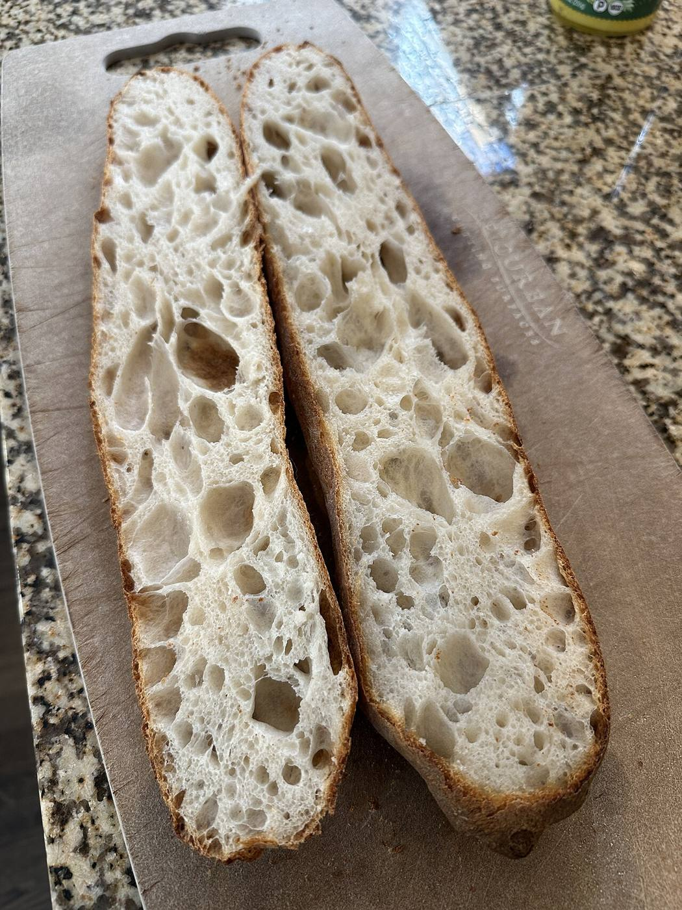

ウォーターバッグ
水をためる袋の部分。図ではいちばん大きな青い面です。
店のこと
お店についての詳しい紹介文は準備中です。ここでは、このサイトの図の見かたを説明します。


写真はパンやコーヒー豆のイメージです。お店のものではなく、お店で提供している商品を示すものでもありません。
図の見かた
水をためる袋の部分。図ではいちばん大きな青い面です。
バッグを包む、一回り大きな内張りのシート。
全体を支える、木の枠の部分。
バッグの下に敷く、温めるための薄いパッド。
温度を合わせる、ダイヤル付きの小さな箱。
水を入れたり抜いたりする、角にある口。
制作側の連想で、お店の理念・由来とは無関係です。実際の製品の仕様を示すものでもありません。


写真はパンやコーヒー豆のイメージです。お店のものではなく、お店で提供している商品を示すものでもありません。